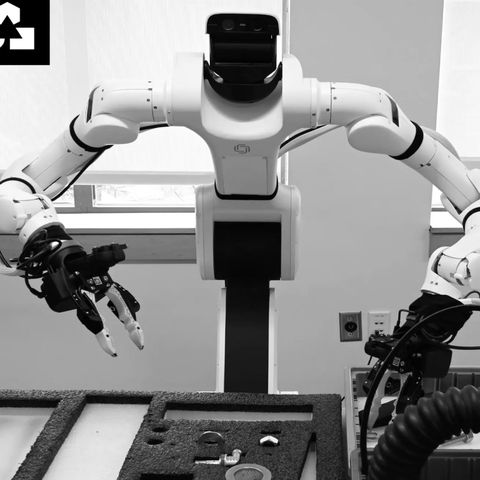
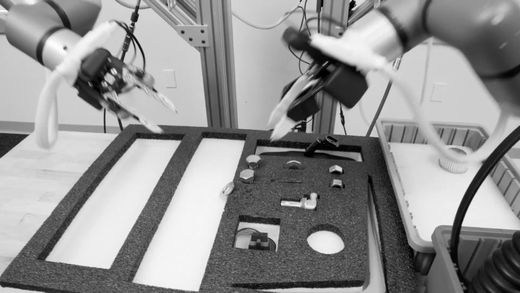
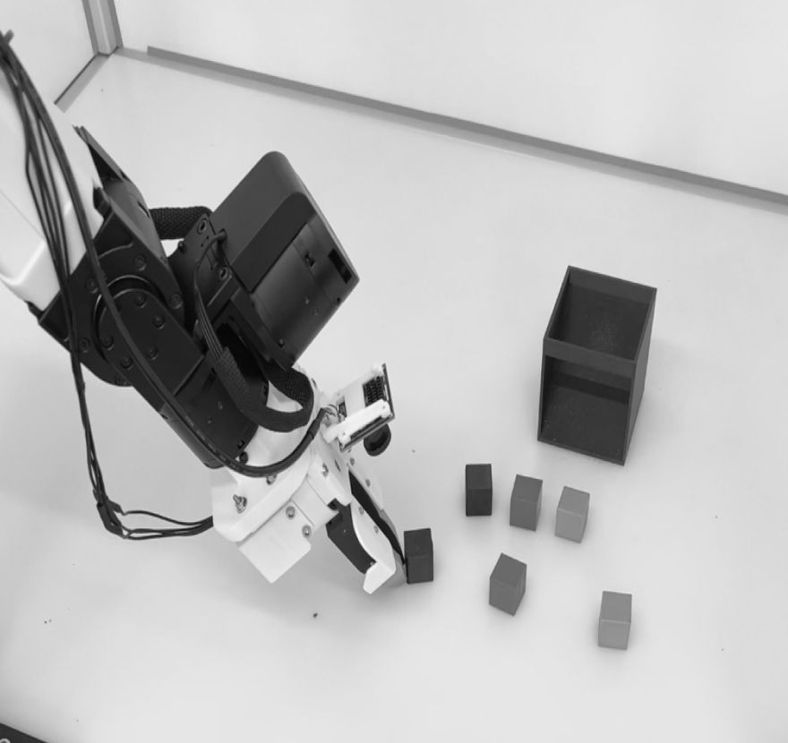
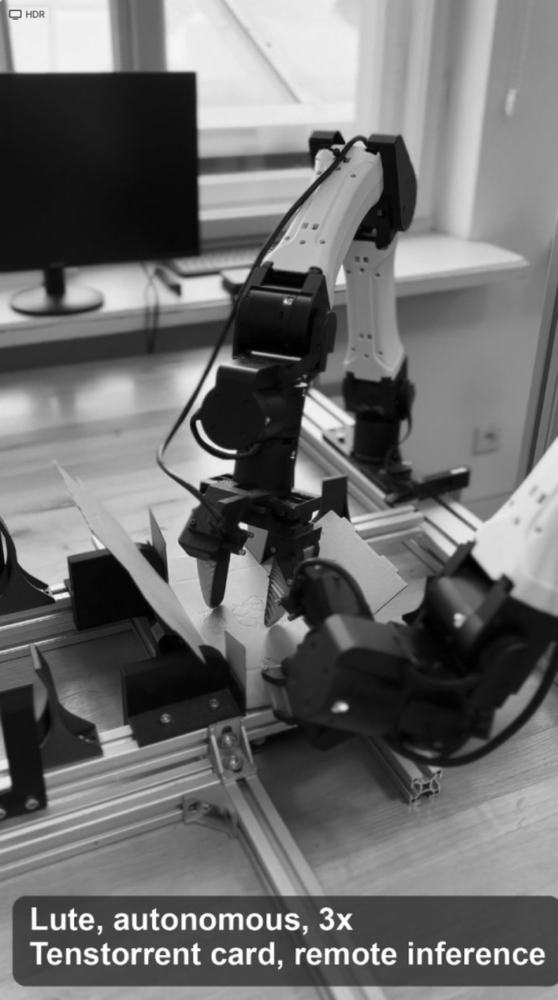

Video speed 3x
Lute combines physical AI software, monitoring, and remote support. Together they turn emerging capabilities into work businesses can rely on today.
Lute combines physical AI software, monitoring, and remote support. Together they turn emerging capabilities into work businesses can rely on today.
(the problem)


Turn hard-to-fill work into dependable capacity. Repetitive work is getting harder to staff. Lute puts robots to work where people are hardest to find. The value is the output it adds to your operation.
The robot operates independently, completing tasks without constant human intervention.
Continuous monitoring detects issues and identifies when human assistance is needed.
A remote operator steps in when necessary to resolve issues and keep operations running reliably.
(How it learns)
Real work produces the situations labs miss. We capture edge cases and interventions. They become data that trains better models. Every deployment makes the system more capable.
(Industry sectors)

(Aug 07, 2026)
A walk through our stack from data collection to inference: where the milliseconds go.
(Feb 25, 2026)
How we are building a set of quality metrics to keep improving data quality and the performance of final policies on challenging real-world problems.

(Jan 01, 2026)
OpenGVL: a benchmark for estimating task progress across diverse manipulation tasks, for both robotic and human embodiments.
Bring your hardware, a preferred platform, or nothing at all.
We build the combination of hardware, software, and support around your workflow.